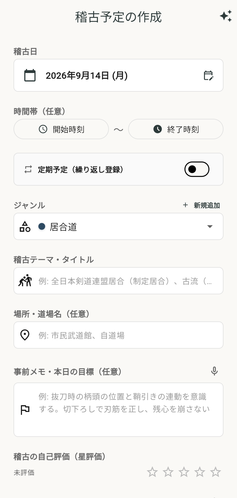
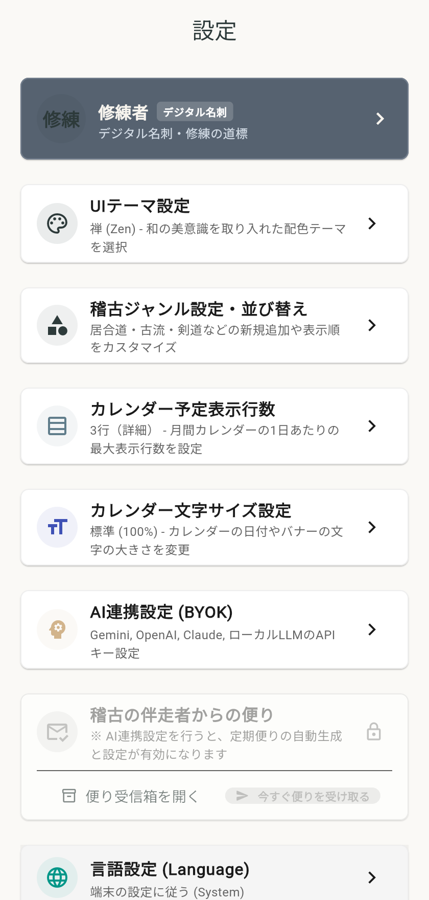

Calendar & Schedules
日本の祝日・行数切り替えに対応した月間カレンダー
稽古予定と実績を直感的に把握できる月間・日別カレンダー。日本の国民の祝日（振替休日・ハッピーマンデー対応）が自動で表示され、予定の密度に合わせて「2行・3行・4行」の表示高さを自由に変更できます。
- 国民の祝日自動判定・和風バッジ表示
- 月間カレンダーの表示行数（2/3/4行）動的切り替え
- 日別稽古カードからワンタップで評価・メモ入力
居合道・合気道・剣道・茶道・華道など、道を志すあらゆる修練者のための稽古ノート。
日々の気付き・師匠からの指導・課題を記録し、AIがあなたの内省と技の深化に伴走します。
何百年と受け継がれてきた日本の修練哲学「守・破・離」。日々の稽古メモとAI分析が、あなたの修練の歩みを可視化します。
師の教えや流派の基本を忠実に守り、基礎基本を徹底的に身体に染み込ませる段階。
稽古の頻度、日時、基本動作の振り返りを着実に記録します。
基本を土台としながら、新たな工夫や他の教えを取り入れ、自分の型を模索・発展させる段階。
試行錯誤のメモや疑問点をAIとともに整理し、新たな気付きを得ます。
すべての型から自由になり、独自の自然な境地を確立する探求の段階。
月間・年間の修練の軌跡を俯瞰し、生涯を通じた技芸の伴走者として支えます。
道場での稽古前・稽古中・稽古後、あらゆる瞬間で迷わず素早く使える洗練された操作性を追求しました。
稽古予定と実績を直感的に把握できる月間・日別カレンダー。日本の国民の祝日（振替休日・ハッピーマンデー対応）が自動で表示され、予定の密度に合わせて「2行・3行・4行」の表示高さを自由に変更できます。

稽古後、道場の着替え中や帰路でも手軽に振り返りを残せるよう、高精度な音声入力（マイク）を搭載。日付が当日または過去の場合、★1〜5の星評価と実績メモ欄が自動展開され、予定と実績をワンステップで記録できます。

道場連絡網やLINEグループに届いた「8月の稽古予定です。8/5 19:00〜…」といった雑多な文章をそのまま貼り付けるだけで、AIが日程・時間・場所・ジャンルを自動解析してカレンダーへ一括登録。登録済みの重複予定も賢く検知・自動除外します。

師匠から指摘された改善点や克服すべきテーマを「重点課題（タスク）」として管理。「守・破・離」のどの段階の課題かをラベル付けし、克服した課題はいつでも復元・参照可能です。
「禅（Zen）」「漆（Urushi）」「モダン（Modern）」の3つのデザインテーマをいつでも切り替え可能。夜間の稽古後にも目に優しいダークモードを完備。
段位・所属道場・流派・入門年などを記載したデジタル名刺プロフィール。稽古仲間との交流やSNSシェアに役立ちます。
大切な稽古録をいつでもCSV形式やJSON形式で一括バックアップ・復元可能。外部ツールや表計算ソフトでの分析にも活用できます。
日本語と英語を完全にサポート。端末言語の自動検知はもちろん、アプリ内設定からいつでも手動で言語を切り替えられます。
「守破離」は煩わしいアカウント登録やログインを必要としません。
アプリを開いた瞬間からすべての機能が使え、大切な稽古記録はすべてユーザーのお手元の端末（IndexedDB / ローカルストレージ）にのみ安全に保存されます。
オフラインでも軽快に動作し、誰にも見られないプライベートな内省の場を保証します。